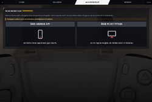

OmegaSim Wiki – die Idee dazu stammt von Gnen54. Hier stehen die offenen Artikel von Nutzer Luuke42 unter der Lizenz CC BY-SA 4.0.
Mehrspieler
Stand dieses Artikels: OmegaSim 1.2.9 vom 26.10.2026 · Firmware des Autos: nicht bekannt (OmegaSim liest die Firmware-Version nicht aus)
Dieser Text wurde mithilfe von KI erstellt (Claude) und ist nicht in jedem Punkt von Menschen geprüft. Fehler bitte direkt verbessern oder auf der Diskussionsseite melden, siehe Mitmachen. Die öffentliche Fassung auf luuke42.github.io/omegasim kann älter sein als der hier beschriebene Stand.


Mehrspieler bezeichnet in OmegaSim zwei getrennte Funktionen, mit denen mehrere Menschen gegeneinander fahren: den Mehrspieler-Modus an einem Gerät, bei dem bis zu drei Spieler mit je einem Controller und einem eigenen Carrera HYBRID-Auto an einem Telefon oder PC fahren, und den WLAN-Mehrspieler (experimentell), bei dem mehrere Geräte mit je einem Auto über ein gemeinsames Netz eine Rangliste, einen gemeinsamen Start und gleiche Renneinstellungen teilen. Im ersten Fall rechnet ein Gerät alle Autos in einem gemeinsamen Sendetakt; im zweiten rechnet jedes Gerät nur sein eigenes Auto, und ein Host vermittelt über eine kleine HTTP-Schnittstelle. Beide lassen sich mit NPCs kombinieren (siehe NPC-Fahrverhalten).
Auf einen Blick
| Merkmal | An einem Gerät | WLAN-Mehrspieler |
|---|---|---|
| Menüpfad | Optionen → Mehrspieler; Rollen in FAHREN → Autos → Garage; Belegung in Optionen → Controller | Reiter WLAN Mehrspieler mit den Seiten Über Android-App und Über PC mit Python |
| Wichtigste Schalter (Standard) | Mehrspieler-Modus (aus; schaltet sich mit einer Rolle Spieler 2/3 ein) · Fahrgefühl je Spieler („wie Spieler 1“) | Host-Adresse, Mein Name · Renneinstellungen erzwingen (an) |
| Status | stabil (seit dem 1.1-Abschnitt nicht mehr experimentell) | experimentell |
| Seit Version | zwei Spieler 0.6.44, drei Spieler 0.9.17, Übernehmen/Abbrechen beim Belegen 1.2.3, Fahrgefühl je Spieler 1.2.4 | gemeinsamer Start 0.8.42, Bereitschaftsschirm 0.8.126, Feinabgleich und „für alle beenden“ 0.9.32 |
| Beteiligte Quelldateien | src/49-spieler.js, src/20-protocol.js, src/90-ghosts.js (Pads, Belegung, Rollen), src/50-drive.js (Cockpit), src/98-presets.js |
src/97-sessions.js (Client), tools/omegasim_host.py (PC-Host), android-app/…/HostServer.java, OmegaHostPlugin.java, OmegaHostService.java (Telefon-Host)
|
Grundlagen
Ein Gerät, mehrere Autos
Ein Telefon kann sich per Bluetooth Low Energy mit mehreren Autos zugleich verbinden. Jedes Auto bekommt etwa alle 45 ms ein Steuerpaket. Für mehrere Spieler an einem Gerät heißt das: Die App liest mehrere Gamepads, rechnet für jedes Auto ein eigenes Fahrzeugmodell und schickt alle Pakete im selben Takt. Gamepads meldet der Browser über die Gamepad-Schnittstelle; er gibt ein Pad aber erst nach dem ersten Tastendruck heraus.
Host und Client
Im WLAN-Mehrspieler ist ein Gerät der Host (Server): Es hält die gemeinsame Rangliste und den Rennplan. Alle anderen sind Clients: Sie melden ihren Stand und fragen den gemeinsamen Stand ab. Die Verbindung zu den eigenen Autos bleibt dabei auf jedem Telefon; über das WLAN gehen nur Rundenzahl, Rundenzeiten, Abgänge und für Zuschauer die Positionen.
HTTP-Abfrage statt WebSocket
Ein WebSocket ist eine dauerhaft offene Verbindung, über die beide Seiten jederzeit senden können. OmegaSim nutzt bewusst keinen, sondern einfache HTTP-Anfragen (GET zum Abfragen, POST zum Melden, Inhalt als JSON). Der Client fragt regelmäßig nach (Polling). Die Begründung im Host-Programm: Eine Rangliste ändert sich nur alle paar Sekunden, eine abgerissene HTTP-Anfrage ist ein Fehler in einer Abfrage, ein abgerissener WebSocket dagegen ein Zustand, der wieder aufgebaut werden muss.[1]
Latenz und Uhrenabgleich
Latenz ist die Zeit, die eine Nachricht unterwegs ist. Die Hin- und Rückzeit einer Anfrage heißt Round-Trip-Time (RTT). Damit alle Telefone gleichzeitig starten, braucht jedes den Versatz seiner Uhr zur Uhr des Hosts. Das Verfahren ist das von Cristian (Grundlage auch von NTP): Man notiert die eigene Uhr beim Absenden (t0) und beim Empfang (t1), der Host schickt seine Uhrzeit mit, und man nimmt an, dass der Host in der Mitte der Laufzeit geantwortet hat. Der Fehler ist dann höchstens die halbe RTT.
Secure Context und Freigaben
Browser erlauben Web Bluetooth nur in einem secure context: einer verschlüsselten Adresse (https), localhost oder einer lokalen Datei. Eine WLAN-Adresse wie 192.168.1.50:8080 über unverschlüsseltes HTTP ist keiner. Außerdem darf eine über https geladene Seite keine unverschlüsselte Adresse im WLAN abfragen, und eine Anfrage von einer fremden Herkunft braucht die Erlaubnis des Servers (CORS). Für JSON-POSTs schickt der Browser vorher eine Prüfanfrage (Preflight, Methode OPTIONS); der Host beantwortet sie mit 204 und den Kopfzeilen Access-Control-Allow-*.
Dienstsuche im WLAN
Damit niemand die Adresse abtippen muss, meldet der Host in der Android-App seinen Dienst per mDNS/DNS-SD (unter Android „NSD“) unter dem Namen _omegasim._tcp an. Andere Telefone suchen danach und bekommen Adresse und Port.
Bedienung
Mehrere Spieler an einem Gerät
- Alle Autos verbinden und an jedem Controller einmal einen Knopf drücken.
- In der Garage einem zweiten Auto die Rolle Spieler 2 und gegebenenfalls einem dritten Spieler 3 geben. Die Wahl schaltet den Mehrspieler-Modus selbst ein (Meldung „MEHRSPIELER-MODUS AN“). Alternativ Optionen → Mehrspieler → Mehrspieler-Modus (2–3 Spieler); dort steht auch, welche Pads und Autos erkannt sind.
- Für Spieler 2 und 3 in der Garage unter Fahrgefühl eine eigene Abstimmung wählen oder „wie Spieler 1“ lassen.
- Tastenbelegung je Spieler: Optionen → Controller, oben Spieler 1/2/3 wählen, Neu zuweisen, dann am richtigen Pad drücken. Mit Übernehmen (am Pad: Options eine Sekunde halten) speichern oder mit Abbrechen verwerfen.
- Rennen starten. Das Cockpit zeigt die Vergleichsansicht „Beide“.
WLAN-Mehrspieler mit Telefon als Host (Android-App)
- Auf einem Telefon im Reiter WLAN Mehrspieler → Über Android-App auf Dieses Telefon ist Host tippen.
- Auf den anderen Telefonen Host im WLAN suchen (oder die Adresse eintragen).
- Mein Name eintragen, Mitmachen.
- Ein Tablet oder Fernseher öffnet die Host-Adresse mit dem Zusatz
/?infoim Browser und wird Info-Screen; ein Telefon ohne eigenes Auto kann Als Info-Screen wählen.
WLAN-Mehrspieler mit PC als Host (Python)
- Auf dem PC Mehrspieler-Host starten.bat doppelklicken oder im Projektordner
python tools/omegasim_host.py --port 8080ausführen. Optional--laps 12oder--minutes 8für die Anzeige der Rennlänge. - Die angezeigte Adresse (Form 192.168.1.50:8080) auf den Telefonen unter Host-Adresse eintragen. Alle Geräte müssen im selben WLAN sein.
- Für Bluetooth im Browser: einmal je Telefon in Chrome unter
chrome://flags/#unsafely-treat-insecure-origin-as-securedie Host-Adresse eintragen und Chrome neu starten. Die Android-App braucht das nicht. - Die Übersicht für den Fernseher liegt auf dem PC unter
/mp-overview.html(über localhost, ohne Freigabe).
Gemeinsames Rennen
- Ein Teilnehmer tippt Rennen für alle starten (oder startet ein Rennen und wählt in der Frage „Für alle“). Auf allen Telefonen erscheint der Bereitschaftsschirm.
- Jeder tippt Bereit. Erst wenn alle anderen aktiven Teilnehmer bereit sind, wird der Knopf Starten beim Initiator frei.
- Nach dem Start läuft auf allen Telefonen dieselbe Ampel nach einem Vorlauf von 12 s.
- Rennen für alle beenden beendet es überall; Verlassen meldet das Gerät ab.
Einstellungen
| Name in der App | Bereich/Werte | Standard | Wirkung laut Code | Schlüssel |
|---|---|---|---|---|
| Mehrspieler-Modus (2–3 Spieler) | an/aus | aus | schaltet die Zusatzplätze und die Vergleichsansicht ein; eine Rolle Spieler 2/3 schaltet ihn selbst an | opt-zwei-an
|
| Rolle (Garage) | Spieler 1, Spieler 2, Spieler 3, Safety Car, Reinigungsfahrzeug, NPC, Aus | erstes Auto Spieler 1, weitere NPC | je Rolle Spieler 1/2/3 höchstens ein Auto | car.role (player, player2, player3)
|
| Fahrgefühl (Garage, Spieler 2/3) | wie Spieler 1, Arcade, Sim+, Pacejka | wie Spieler 1 | eigenes Preset über die kopierte Abstimmung von Spieler 1, eigene Reifenmischung | omegasim-preset-spieler-2, -3
|
| Selbstlenkung (Garage, je gesteuertem Auto) | wie Optionen, aus, hält die Spur, lenkt selbst | wie Optionen | Fahrhilfe je Auto | car.fahrhilfe
|
| Spieler 1/2/3 (Optionen → Controller) | Auswahl | Spieler 1 | wessen Belegung bearbeitet wird; nur im Mehrspieler-Modus sichtbar | bindEditSpieler
|
| Controller tauschen | – | – | entfernt seit 0.10.5, verborgen und immer aus | opt-zwei-tausch
|
| Host-Adresse | Text | leer, dann gemerkt | Adresse ohne Schema; die App setzt das Schema selbst davor | mp-host
|
| Mein Name | Text | leer („ohne Namen“) | Name in der Rangliste, höchstens 40 Zeichen beim Host | mp-name
|
| Renneinstellungen erzwingen | an/aus | an | das aktive Preset des Initiators geht mit dem Rennplan an alle (Tempo, Handling, Beschleunigung, Schaden, Reifenverschleiß); Controller, Tasten, Empfindlichkeit, Vibration und Ton bleiben | mp-force-preset
|
| Port (PC-Host) | Zahl | 8080 | Port des Host-Programms | --port
|
| Rennlänge (PC-Host) | Runden oder Minuten | keine | nur für die Übersicht | --laps, --minutes
|
Name, Host-Adresse und eine zufällige Kennung (p + acht Zeichen) bleiben im Browser gespeichert (chc.mp.v1).
Funktionsweise
Spielerplätze: die zusatzPlatz-Registry
src/49-spieler.js verallgemeinert den früheren Zwei-Spieler-Modus auf bis zu SPIELER_MAX = 3 Spieler.[2] Spieler 1 bleibt wie er ist, weil er Wege hat, die nur er hat (Eingabe über Tastatur und Touch, Boxen-Minispiel, Windschatten, Ideallinie). Jeder weitere Spieler ist ein Zusatzplatz mit eigenem Satz:
- Auto, Stick- und Gaswert, Ausgaben des Modells (Lenkung, Gas, Bremse),
- eigenes Fahrzeugmodell (
CarreraPhysicsEngine), beim ersten Zugriff gebaut und von Spieler 1 abgeglichen, - Tastenbelegung, Autopilot-Regler, Abseits-Zustand, Tank, Schaden, Boxenstopp, Reifenmischung, Tankziel,
- Knockout-Leben, Derby-Werte, Lichtstatus und eine eigene Motorstimme.
Platz 2 ist dabei ein Satz aus Gettern und Settern auf die alten Variablennamen (playerCar2, p2Steer, tankZwei …), damit rund 300 Stellen in Prüfläufen weiter gelten; Platz 3 hat eigene Felder in derselben Form. Die Rolle player2 oder player3 ordnet ein Auto über zusatzPlatzVonRolle() seinem Platz zu, spielerNrVon(car) liefert umgekehrt 1, 2, 3 oder 0.
Feste Zuordnungen je Spieler:
| Spieler | Farbe | Stereoseite (Pan) | Rundengong |
|---|---|---|---|
| 1 | Grün #2ee06a |
0 (Mitte bzw. links) | Grundton |
| 2 | Orange #ffb02e |
+0,55 (rechts) | × 1,5 |
| 3 | Blau #4db8ff |
−0,25 (links) | × 1,25 |
Ein Sendetakt für alle
Alle Zusatzplätze werden im selben 45-ms-Takt wie Spieler 1 in fester Reihenfolge bedient (spielerZweiSenden()): Für jeden Platz mit Auto wird sein Fahrzeugmodell einen Schritt gerechnet und das Paket geschrieben. Für Spieler gilt dabei die Regel „der neueste Befehl ersetzt den wartenden“, und jedes Auto hat seine eigene Schreibsperre, sodass ein langsamer Funkweg nur beim eigenen Auto einen Takt auslässt. Getrennte Sendewege waren in früheren Fassungen die Ursache für Stottern mit echtem Controller.[3] Gemessen mit 60 Takten Vollgas: 60 Pakete, kein Ausfall.
Pad-Zuordnung
padsFuerSpieler() ordnet die Gamepads zu:[4]
- Ein Spieler: das zuletzt benutzte Pad (höchster Zeitstempel) unter den Pads mit Standardbelegung, sonst unter allen.
- Mehrspieler: Pads mit Standardbelegung zuerst, dann die übrigen, jeweils in der Reihenfolge des Browsers; das erste fährt Auto 1, das zweite Auto 2, das dritte Auto 3. Der frühere Tauschschalter ist entfernt (
padTauschenSetzen()setzt immer „aus“).
Jede Belegung wird zusätzlich unter der Kennung des Pads gespeichert (carrera-hybrid-gamepad-pad: + Pad-Name, höchstens 120 Zeichen). Erscheint an einem Platz ein anderes Pad, lädt padBelegungAbgleichen() dessen gemerkte Belegung. Die Belegungen je Spieler liegen außerdem unter carrera-hybrid-gamepad-bindings-v2 (Spieler 1), …-p2 und …-p3.
Abgleich-Sitzung: Übernehmen und Abbrechen (seit 1.2.3)
Das Neubelegen ist eine kleine Zustandsmaschine:[5]
| Zustand | Bedingung | nächster Zustand |
|---|---|---|
| frei | „Neu zuweisen“ angetippt | Sitzung (Entwurf = Kopie der aktuellen Belegung) |
| Sitzung | Eingabe am Pad des bearbeiteten Spielers, während eine Aktion wartet | Sitzung (Entwurf geändert, nichts gespeichert) |
| Sitzung | Knopf „Übernehmen“ oder Options (Taste 9) 1000 ms gehalten | Sperre (Entwurf gespeichert) |
| Sitzung | Knopf „Abbrechen“ | Sperre (Entwurf verworfen) |
| Sperre | alle Tasten aller Pads losgelassen (kein Knopf gedrückt, kein Wert über 0,3) | frei |
In Sitzung und Sperre reagiert das Pad auf nichts anderes. Vorher konnte eine noch gehaltene Taste nach dem Zuweisen Zurück, einen Reiterwechsel oder das Cockpit auslösen, und die Ruhelage des Sticks wurde aufgenommen, während X noch gedrückt war, sodass X sich selbst erfasste.
Fahrgefühl je Spieler (seit 1.2.4)
Jeder Zusatzmotor bekommt zuerst eine Kopie der Abstimmung von Spieler 1 (alle Werte, die Gangtabelle als eigene Objekte). Hat der Spieler in der Garage ein eigenes Fahrgefühl gewählt, legt spielerGefuehlUeberlagern() dessen Schnappschuss darüber: Die App stellt die Regler des Presets kurz ein, kopiert die entstandene Konfiguration und stellt die Regler zurück. Danach setzt sie die eigene Reifenmischung wieder ein, weil die Kopie Griff und Verschleiß von Spieler 1 mitgebracht hätte.[6] Ob ein Spieler mit Physik (Physik, Pacejka) oder als RC fährt, entscheidet sein eigenes Preset, sonst das von Spieler 1. Wählbar sind die Fahren-Presets Arcade, Sim+ und Pacejka. Globale Einstellungen wie Tankverbrauch, Schaden, Reifenverschleiß, Wetter, Höchstgeschwindigkeit und Akkuausgleich gelten für alle Autos gleich.
Was Auto 2 und 3 haben
| Vorhanden | Nicht vorhanden oder eingeschränkt |
|---|---|
| eigene Fahrphysik mit Gängen, Drehzahl, Tempo und Temperaturen | die drei Rundenzeiten im Cockpit (sie gehören Auto 1; die anderen stehen in der Rundenübersicht) |
| eigene Ortung: NPCs weichen aus und wählen ihre Überholseite nach seiner Querlage, Punkt auf der Karte, Fahrhilfe und Leitplanken-Modus | Makro-Aufnahme (zeichnet nur Auto 1 auf) |
| eigener Schaden mit Lampenausfall, Tank, Notlauf | Doppler-Effekt im Ton |
| eigene Motorstimme auf eigener Stereoseite, eigene Knaller | Boxenstopp nur per Knopf, nicht über die Boxengasse der Strecke |
| Rundenzählung, Rangliste, Ergebnis und CSV; die Zielflagge wartet auf alle Fahrer | Boxen-Minispiel (nur ohne zweiten Spieler) |
| gelbe Flagge und Einführungsrunde mit eigenem Autopilot-Regler, Frühstart- und Pflichtstopp-Strafen |
Die Rundenzählung kostete nichts: Sie lief schon immer je verbundenem Auto, unabhängig von der Rolle.
Cockpit und Vergleichsschirm „Beide“
OmegaSim teilt den Bildschirm nicht. Sobald Spieler 1 und Spieler 2 ein Auto in der Garage haben, zeigt der Standard-Cockpitschirm selbst die Vergleichsansicht „Beide“ (cockpitMainMalen() setzt dann data-screen="auto2"); man muss nicht mehr dorthin blättern. Die übrigen Schirme sind Box und Rennen.[7] Die Ansicht zeigt nebeneinander Tempo, Schaltlichter, Gang, Tank, Zustand, Reifen- und Bremsentemperatur und Akku, in jeder Spalte in derselben Reihenfolge, dazu je Auto einen Boxenknopf, die Wahl von Reifen und Tankmenge und einen eigenen Motor-Knopf. Hat Spieler 3 ein Auto, kommt eine dritte Spalte dazu. Der Boxenstopp eines Zusatzspielers tankt mit derselben Rate wie bei Auto 1 (22 %/s), repariert und zieht die gewählte Mischung auf; der Service beginnt erst im Stillstand. Der Ⓘ-Text der Option spricht noch von einem eigenen Schirm, zu dem man blättert; maßgeblich ist der Code.
WLAN: Schnittstelle des Hosts
Python-Host und Android-Host sprechen dieselbe Schnittstelle; wer eine ändert, muss die andere mitändern.[8]
| Anfrage | Inhalt | Antwort und Wirkung |
|---|---|---|
GET /mp/state[?zuschauer=ID] |
– | Rangliste, Rennzustand, Host-Uhr (zeitMs), Startkennung (boot), Zahl der Zuschauer (Abruf in den letzten 5 s), Streckencode
|
POST /mp/report |
{id, name, laps, letzte, beste, abgaenge, summe, strafe, pos, strecke}, alles außer id optional |
legt den Fahrer an oder aktualisiert ihn; eine geänderte Rundenzahl setzt den Zeitpunkt der letzten Überfahrt |
POST /mp/race |
{plan, phase, initiator, vorlaufMs} |
phase „bereit“: Bereitschaftsschirm; phase „start“: Startzeit setzen, aber nur, wenn alle aktiven Fahrer außer dem Initiator bereit sind |
POST /mp/ready |
{id} |
Fahrer in die Bereit-Liste |
POST /mp/race/cancel |
– | Bereitschaftsrunde beenden, Fahrer und Wertung bleiben |
POST /mp/leave |
{id} |
Fahrer entfernen |
GET /mp/info |
– | Rennlänge und eigene Adresse |
GET /mp/reset |
– | neues Rennen: alle Fahrer und der Rennplan werden gelöscht |
OPTIONS |
– | 204 mit Access-Control-Allow-Origin: * (Preflight)
|
| alles andere | – | die App selbst als Dateien (Info-Screen im Browser) |
Ein Bericht darf beim Python-Host höchstens 16 KiB groß sein, beim Telefon-Host 8 KiB; Namen werden auf 40, Kennungen auf 64 Zeichen gekürzt. „Aktiv“ ist ein Fahrer, der sich in den letzten 15 s gemeldet hat. Der Python-Host ermittelt seine eigene Adresse über einen UDP-Socket „zu“ einer Adresse außerhalb, ohne zu senden; so wählt das Betriebssystem die Schnittstelle, die ins Netz führt.
Takte des Clients (src/97-sessions.js):
| Vorgang | außerhalb des Rennens | im Rennen |
|---|---|---|
Stand abfragen (/mp/state) |
alle 1500 ms | höchstens alle 3000 ms |
Lebenszeichen (/mp/report) |
spätestens alle 5000 ms, zusätzlich nach jeder Runde | ebenso |
| Positionen für Zuschauer | alle 330 ms, nur wenn mindestens ein Zuschauer da ist | höchstens alle 500 ms |
| Info-Screen fragt ab | alle 400 ms | alle 400 ms |
Eine Position ist {i, f, c, k, g}: Teilnummer, Phase auf dem Teil (drei Nachkommastellen), Farbe, Kürzel (höchstens drei Zeichen) und ob es ein NPC ist; je Telefon höchstens acht Autos.
Rangliste
Sortierschlüssel = (−Runden, Zeitpunkt der letzten Rundenänderung beim Host)
Wer mehr Runden hat, führt; bei gleicher Rundenzahl, wer zuerst dort war. Die Bestzeit steht nur als Spalte daneben, weil sie „wer ist schnell“ beantwortet und nicht „wer führt“. Gezählt werden gemessene Runden: Die erste Überfahrt startet die Uhr, erst die zweite ergibt eine Zeit. Nach drei Überfahrten stehen also zwei Runden da.[9] Während eines Rennens zeichnet der Client die Tabelle erst nach dem Rennen neu.
Zeitabgleich: mp.offset
Jede Abfrage misst t0 und t1 (eigene Uhr) und liest zeitMs (Host-Uhr):[10]
// src/97-sessions.js, mpUhrProbe()
const weg = t1 - t0; // Hin und zurück
if (weg < 0 || weg > 300) return; // zu langsame Proben verwerfen
mp.proben.push({ weg, off: zeitMs - (t0 + t1) / 2 });
if (mp.proben.length > 8) mp.proben.shift();
mp.offset = mp.proben.reduce((a, x) => (x.weg < a.weg ? x : a)).off;
offset = Host_Uhr − (t0 + t1)/2 aus der Probe mit der kleinsten Laufzeit unter den letzten 8 Fehler ≤ weg/2 lokal = Host_Zeit − offset
Es zählt die schnellste Probe, weil bei ihr die Annahme „Antwort in der Mitte“ am wenigsten falsch sein kann.
Startzeit: startAt
- Der Initiator schickt
/mp/racemit phase „bereit“ und dem Rennplan: Renntyp, Länge, Startwetter, Wetterwechsel, fliegender Start, Pflichtstopps, Starttank, ein vorab gewürfelter Wetterplan, eine Windrichtung, eine gemeinsame Ampelverzögerung (1000 bis 3000 ms) und, wenn „Renneinstellungen erzwingen“ an ist, das aktive Preset; in der Meisterschaft zusätzlich Event und deren Preset. - Der Host setzt phase „bereit“; alle Clients zeigen beim nächsten Abruf den Bereitschaftsschirm.
- Sind alle aktiven Fahrer außer dem Initiator bereit, schickt der Initiator phase „start“ mit
vorlaufMs= 12 000. Der Host prüft das erneut und setzt
startAt = Host_jetzt + vorlauf vorlauf auf 6000 … 30000 ms begrenzt
- erhöht die Renn-Nummer, setzt Runden und Zeiten aller Fahrer zurück und gibt
startAtüber/mp/statean alle.
- Jeder Client rechnet
lokal = startAt − mp.offset. Liegt das weniger als 500 ms in der Zukunft, ignoriert er den Start. Sonst übernimmt er den Plan (Renntyp, Länge, Wetter, Preset) und startet den Countdown auf genau diese Zeit. Kennung des Rennens ist Host-Startkennung:Renn-Nummer, damit ein neu gestarteter Host mit wieder bei 1 beginnenden Nummern nicht für ein altes Rennen gehalten wird. - Feinabgleich im Vorlauf: achtmal im Abstand von 300 ms eine weitere Uhrprobe; weicht die daraus berechnete Startzeit um 8 ms oder mehr von der benutzten ab, wird die Ampel entsprechend verschoben.
Zielflagge: Bei Rennen über Runden schaltet ein Client auf „letzte Runde“, sobald ein anderer aktiver Fahrer die Rundenzahl erreicht hat; die laufende Runde zählt noch. Für alle beenden sendet einen Plan mit ende: true in phase „bereit“; jeder andere Client beendet daraufhin sein Rennen, nach 4 s wird die Bereitschaftsrunde aufgehoben. Frühstart- und Pflichtstopp-Strafen gehen als summe und strafe mit zum Host; dafür sind eine neue APK beziehungsweise ein neuer Host nötig.
Host in der Android-App
Das Telefon startet einen kleinen HTTP-Server (NanoHTTPD) auf Port 8080, meldet ihn per NSD als _omegasim._tcp an und hält ihn mit einem Vordergrunddienst am Leben, damit Android ihn bei dunklem Bildschirm nicht beendet. „Host im WLAN suchen“ sucht 3500 ms lang und liefert, was in dieser Zeit gefunden und aufgelöst ist. Der Telefon-Host liefert auch die App selbst aus, sodass ein Browser im WLAN mit /?info zum Info-Screen wird. Im reinen Browser ist dieser Weg nicht möglich, weil eine Webseite keinen Server starten darf.[11]
Beispiele
Uhrenabgleich
Ein Telefon fragt um t0 = 10 000 ms (eigene Uhr) ab, die Antwort kommt um t1 = 10 060 ms, der Host meldet zeitMs = 5 000 030.
- weg = 60 ms (unter 300, gültig).
- offset = 5 000 030 − (10 000 + 10 060)/2 = 5 000 030 − 10 030 = 4 990 000 ms.
- Eine spätere Probe mit weg = 20 ms ergibt 4 990 012; sie ersetzt den Wert, weil sie schneller war. Der Restfehler ist höchstens 10 ms.
- Der Host setzt startAt = 5 012 040. Lokal: 5 012 040 − 4 990 012 = 22 028 ms auf der eigenen Uhr, also gut 12 s nach der letzten Probe.
- Ergibt eine Probe im Vorlauf 4 990 002, liegt die neue Startzeit 10 ms später; weil 10 ≥ 8, wird die Ampel um 10 ms verschoben.
Rangliste
| Fahrer | Runden | letzte Rundenänderung (Host) | Platz |
|---|---|---|---|
| Anna | 5 | 100,2 s | 2 |
| Ben | 5 | 99,8 s | 1 |
| Cem | 4 | 98,0 s | 3 |
Ben und Anna haben gleich viele Runden; Ben war 0,4 s früher dort und führt. Cem hat eine Runde weniger, obwohl seine letzte Überfahrt am frühesten war.
Netzlast
Vier Telefone außerhalb des Rennens: 4 × (1/1,5 s) ≈ 2,7 Abfragen je Sekunde, dazu alle 5 s ein Lebenszeichen je Telefon. Mit einem Info-Screen kommen 2,5 Abfragen je Sekunde des Info-Screens und je Telefon rund drei Positionsmeldungen je Sekunde hinzu (im Rennen zwei).
Pad-Zuordnung
Erkannt sind ein DualSense (Standardbelegung), ein Xbox-Pad (Standardbelegung) und ein USB-Pad ohne Standardbelegung, das der Browser als erstes meldet. Reihenfolge nach padsSortiert(): DualSense, Xbox, USB-Pad, also DualSense → Spieler 1, Xbox → Spieler 2, USB-Pad → Spieler 3. Hatte das Xbox-Pad früher eine eigene Belegung, wird sie beim Zuordnen für Spieler 2 geladen.
Grenzen und bekannte Probleme
- WLAN-Mehrspieler experimentell. Die App weist selbst darauf hin, dass er noch nicht fehlerfrei funktioniert.
- Secure Context. Im Browser über eine WLAN-Adresse lässt sich kein Auto verbinden, solange die Adresse nicht in Chrome freigegeben ist. Eine über https geladene App erreicht keinen unverschlüsselten Host; sie muss dann vom Host selbst geladen werden. Hosts vor 0.6.19 fehlten die CORS-Kopfzeilen.
- WLAN-Abriss. Jeder fährt weiter; nur die Rangliste steht still. Ein Bericht, der nicht ankommt, wird nicht wiederholt, sondern vom nächsten ersetzt.
- Start-Genauigkeit. Der Fehler des gemeinsamen Starts ist höchstens die halbe Laufzeit der besten Probe, im WLAN typischerweise einige Millisekunden bis wenige Dutzend; gemessen ist das noch nicht.
- Ein Gerät: Die Pad-Reihenfolge vergibt der Browser und ist nicht wählbar. Die Vergleichsansicht erscheint nur, wenn Spieler 2 belegt ist.
- Nicht vorhanden für Auto 2/3: siehe Tabelle oben (Rundenzeiten im Hauptbereich, Makro-Aufnahme, Doppler, Boxengasse, Minispiel).
Versionsgeschichte
| Version | Änderung |
|---|---|
| 0.6.44–0.6.50 | Zwei-Spieler-Modus an einem Gerät: eigene Physik, dann Ortung, Schaden, Tank, Motorstimme, Boxenstopp |
| 0.6.19 | PC-Host mit CORS-Kopfzeilen: Mitmachen auch, wenn die App nicht vom Host geladen wurde |
| 0.8.42 | gemeinsamer Start mit Startzeit in der Host-Uhr, gemeinsamer Wetterplan und Wind |
| 0.8.126 | Bereitschaftsschirm: Start erst, wenn alle bereit sind |
| 0.9.2 | Bereitschaftsrunde abbrechen, Verlassen, Host-Startkennung |
| 0.9.17 | drei Spieler über Spielerplätze (zusatzPlatz), dritte Spalte in „Beide“
|
| 0.9.32 | Feinabgleich der Ampel im Vorlauf, Rennen für alle beenden |
| 0.9.41 | weniger Abfragen im Rennen (3000 ms), Tabelle erst nach dem Rennen |
| 0.10.5 | „Controller tauschen“ entfernt |
| 1.0.12 | Pflichtstopp-Strafen für alle gesteuerten Autos, Meldung von Gesamtzeit und Strafe an den Host |
| 1.1 (Abschnitt) | Spieler 2 und 3 nicht mehr experimentell; Selbstlenkung je gesteuertem Auto |
| 1.2.3 | Belegen als Entwurf mit Übernehmen (Options 1 s) und Abbrechen, Sperre bis alle Tasten los |
| 1.2.4 | Fahrgefühl je Spieler (Arcade, Sim+, Pacejka oder wie Spieler 1), eigene Reifenmischung bleibt |
Einzelnachweise
- ↑
tools/omegasim_host.py, Kopfkommentar „Warum HTTP und kein WebSocket“. - ↑
src/49-spieler.js, Kopfkommentar undzusatzPlatz(). - ↑
src/20-protocol.js,spielerZweiSenden(),spielerSendenVon();CARRERA_HYBRID.md, „Zwei Spieler auf einem Handy“. - ↑
src/90-ghosts.js,padsSortiert(),padsFuerSpieler(). - ↑
bindSitzungStarten(),bindSitzungEnde(),bindPadSitzung(),padAllesLos(). - ↑
src/49-spieler.js,zusatzMotorAbgleichen(),spielerGefuehlUeberlagern();src/98-presets.js,presetSchnappschuss(). - ↑
src/50-drive.js,COCKPIT_SCREENS,cockpitMainMalen(),zweiSpielerAktiv(). - ↑
android-app/android/app/src/main/java/de/lroeseler/omegasim/HostServer.java, Kopfkommentar. - ↑
tools/omegasim_host.py,zustand_lesen(). - ↑
src/97-sessions.js,mpUhrProbe(),mpStartFeinabgleich(). - ↑
OmegaHostPlugin.java,OmegaHostService.java.
Siehe auch
- Rennarten
- NPC-Fahrverhalten
- OmegaBle
- Boxenstopp
- Fahrverhalten
- Bluetooth Low Energy
- Aufbau von OmegaSim
- Glossar
Quellen im Code
src/49-spieler.js:SPIELER_MAX,zusatzPlatz(),zusatzPlatzNeu(),zusatzPlatzZwei(),zusatzAktiv(),spielerNrVon(),spielerPan(),zusatzMotorAbgleichen(),spielerGefuehlUeberlagern(),spielerPhysikAn()src/20-protocol.js:spielerZweiSenden(),spielerSendenVon()src/90-ghosts.js:padsSortiert(),padsFuerSpieler(),padBelegungAbgleichen(),loadBindingsZusatz(),bindSitzungStarten(),bindSitzungEnde(),bindPadSitzung(),setCarRole(),garRollenFrei()src/50-drive.js:COCKPIT_SCREENS,cockpitMainMalen(),zweiSpielerAktiv()src/98-presets.js:spielerPreset(),spielerPresetSetzen(),presetSchnappschuss()src/97-sessions.js:mpJoin(),mpHolen(),mpBerichten(),mpPosBerichten(),mpUhrProbe(),mpStartFeinabgleich(),mpPlanBauen(),mpRennenFuerAlle(),mpBereitStarten(),mpRennenPruefen(),mpRennenUebernehmen(),mpZielPruefen(),mpRennenBeendenFuerAlle(),mpiHolen()tools/omegasim_host.py:zustand_lesen(),rennen_starten(),melden(),bereit_maelden(),abmelden(),Handler,eigene_adresse()android-app/android/app/src/main/java/de/lroeseler/omegasim/:HostServer.java,OmegaHostPlugin.java,OmegaHostService.javadocs/plan-p2p-apk.md
Weblinks
- Browserfassung, Android-App und Quellcode: Links auf der Hauptseite